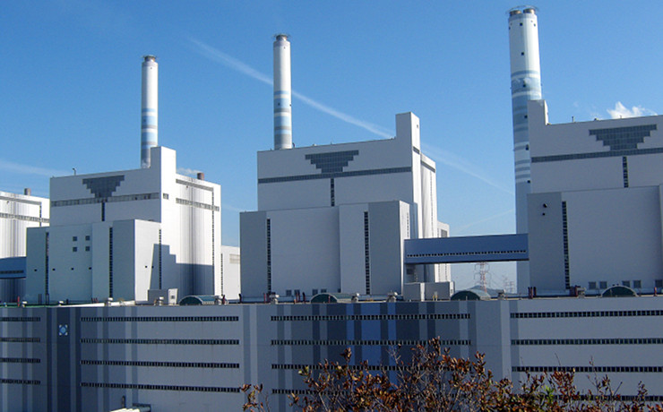
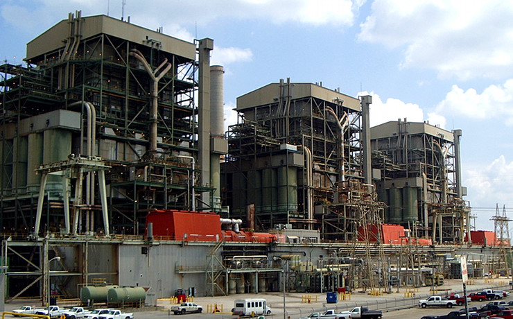

Rowan Technologies Ltd, established in 1991, provides a diverse range of services and systems related to
engineering material performance, monitoring, integrity and preservation. The company’s expertise ranges
from industrial plant integrity and performance, including corrosion and thermal monitoring, to historic
building conservation and cathodic protection systems. Our clients include many major UK and overseas
companies.
Scanner Installations - Samcheonpo Power Station, South Korea
Lead Roof Inspection - Thaxted Church, Essex, UK
VTER Corrosion Probes - Drax Power Station, UK

Scanner Installations - Yeongheung Power Station, South Korea
Cathodic Protection System - Wellington Arch, London

Scanner Installation - Martin Lake Power Station, Texas
Concrete Conservation - Tynemouth Priory, Tyne & Wear, UK
Industrial Monitoring
We design and supply systems for monitoring both the integrity (corrosion, erosion and cracking) and thermal
behaviour of industrial plants. Our scanner technology, designed to monitor and map large areas of plant
such as boiler walls, has been used in power generation plant since 1999 - our first full-scale system is
now set to have an operational life of more than ten years.
We provide services and systems for corrosion risk assessment, prevention and control, and specialise in the
design and supply of cathodic protection systems to inhibit the corrosion of embedded metalwork in masonry
and concrete. As advisers to English Heritage, we have extensive experience in the preservation and
conservation of historic structures, including some of the UK’s best known buildings.
Services include consultancy, failure analysis and environmental monitoring and we have (or have access to)
a wide range of analytical instrumentation, measurement and test facilities. We have received a number of
technical awards for our research and development activities: our development projects include ceramic
thermocouples, ideally suited to high temperature (greater than 1500°C) and highly corrosive
environments.